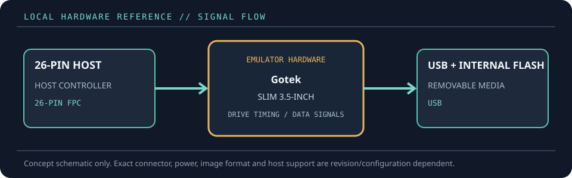

[ FLOPPY EMULATORS // IDENTIFIED HARDWARE ]
Gotek SFR1M44-DU26 26-pin USB Floppy Emulator
A model-specific record for a physical floppy-drive emulator. It distinguishes the emulator hardware, removable media and host-facing drive signals; firmware support alone does not establish compatibility with a particular machine.

MODEL IDENTIFICATION: PRODUCT RECORD: Gotek SFR1M44-DU26 26-pin USB Floppy Emulator. Compatibility is conditional on the actual host’s connector, controller, signal conventions, drive geometry, firmware and media configuration; do not infer fit from connector count or nominal drive size alone.
Recorded specifications
| Cataloged part | Gotek SFR1M44-DU26 26-pin USB Floppy Emulator |
|---|---|
| Manufacturer / project | Gotek |
| Product family | USB flash floppy replacement; slim 26-pin FPC variant |
| Drive bay / physical fit | Slim 3.5-inch floppy bay or instrument-specific internal mounting; check depth and bezel clearance. |
| Host interface / power | 26-pin FPC/FCC floppy connector (connector orientation and cable contact side must match); unit-specific USB port and controls. Do not assume the standard 34-pin Gotek pinout. |
| Removable media / image format | USB flash drive; the model presents a 1.44 MB virtual floppy through its internal flash. User files are transferred with the model’s IN/OUT workflow rather than treating the stick as a disk-image library. |
| Host compatibility | Equipment with the matching 26-pin floppy interface and 1.44 MB drive expectations; documented examples include Tektronix TDS-series instruments and embroidery equipment. Compatibility is not universal among devices using 26 pins. |
| Variants and identification | SFR1M44-DU26 is the 26-pin slim unit; SFR1M44-TU26 uses a differently oriented connector. Distinguish these from 34-pin SFR1M44 models and verify cable orientation from the device manual. |
Compatibility and handling
- Use the exact cable pin-1/contact orientation and the instrument-specific manual before powering the drive; 26-pin does not imply a universal pinout.
- The contemporary Gotek manual and independent installation report describe the internal-flash/USB transfer behavior. It is not a generic USB-to-floppy adapter and does not make arbitrary disk-image formats readable.
- Back up files before using IN/OUT operations, and confirm the host’s expected geometry and write behavior.
Before installation, compare the emulator’s exact revision and interface against the host service documentation. Confirm connector keying and pin one, power voltage/polarity, drive select, motor/disk-change signals, expected density and image geometry. Preserve a read-only copy of original disk images and configuration files before experimenting.
Model notes
SFR1M44-DU26 is the 26-pin slim unit; SFR1M44-TU26 uses a differently oriented connector. Distinguish these from 34-pin SFR1M44 models and verify cable orientation from the device manual.
USB flash drive; the model presents a 1.44 MB virtual floppy through its internal flash. User files are transferred with the model’s IN/OUT workflow rather than treating the stick as a disk-image library.
Sources & further reading
- Gotek — SFR1M44-DU26 product recordManufacturer product listing identifying the DU26 model and intended use.
- Gotek — SFR1M44-DU26 user manualModel-specific user manual entry.
- M. Birth — Gotek SFR1M44-DU26 field notesIndependent installation and operation notes, including 26-pin connector details.
Manufacturer statements describe product capability, not guaranteed operation on every revision of the named host. Confirm current manual, firmware and wiring before installation.